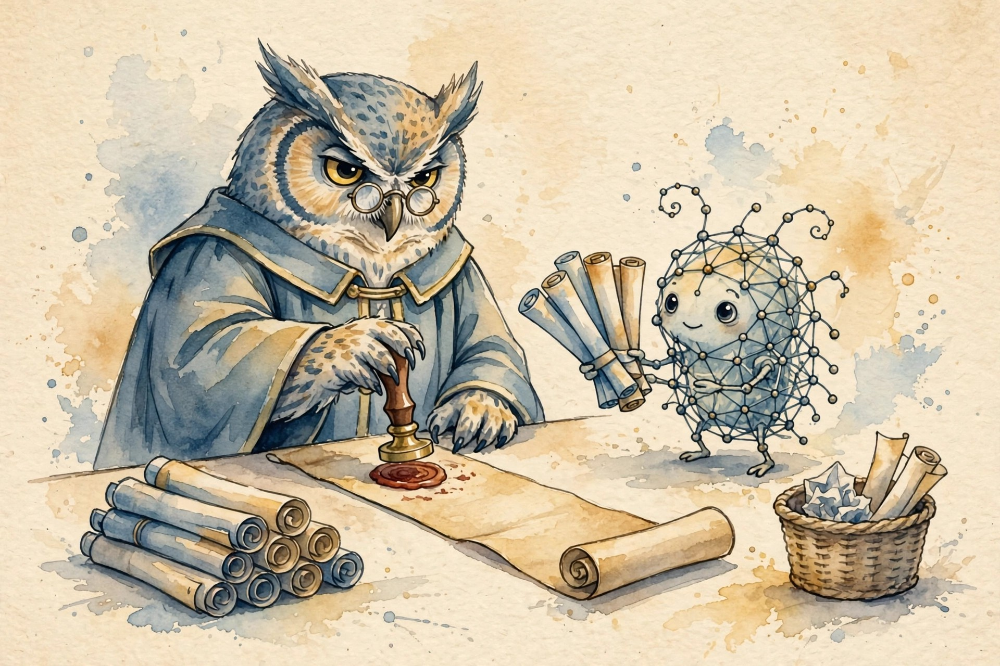
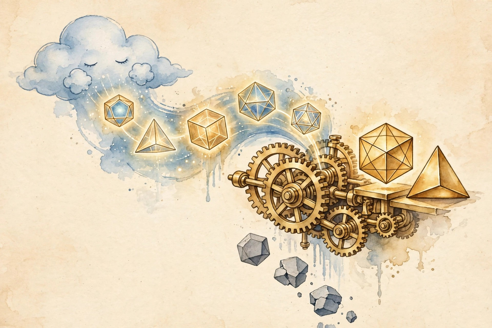
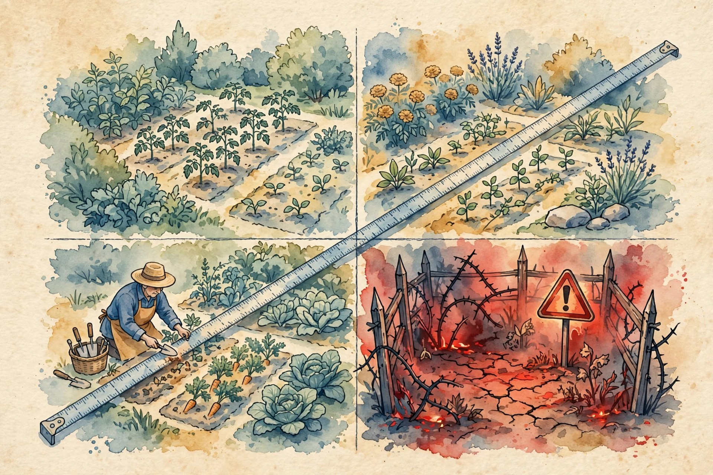

Narrated from the lesson document
A proof is a checkable artifact, search is the process that finds it, and the symbolic kernel is the judge that cannot be argued with. This companion walks Unit 07: formal proof search, the neuro-symbolic geometry loop, the autonomy envelope, robot loops, and the honesty discipline of teaching guests at schedule-line level.
From the lesson The idea, and every number beside it, comes from the cited section of u07_reasoning_formal.md. The phrasing is the companion’s.
Illustration Invented by the companion: an analogy, a toy with made-up values, or a what-if. Never lecture content.
companion Companion voice: the idea above the tag is from the lesson. The generalization below it is the companion’s.
Provenance: no full lecture transcript exists for sessions 15, 16, 18, 19. This page narrates the lesson document content/v2/cs329a/lessons/u07_reasoning_formal.md, not a video. All four guest sessions are taught at schedule-line level only, per the lesson’s own honesty note: the mechanism sections C02 to C05 come from the requested inventory with SOURCE ATTRIBUTION PENDING, not from the guest talks. The builder did not inspect paper contents. Toy numbers are the lesson’s own computed values, re-plotted here with section citations. Toys are computed and traceable. No benchmark numbers are claimed.

Section 1 · C01
From the lessonC01 §3
A schedule line is a title, not a transcript. It tells you the topic and the speaker. It does not tell you the claims, the demos, or the numbers. This concept teaches the discipline of the boundary: say what the line supports, and stop there.
From the lessonC01 §2, §6
The toy: 4 guest sessions. Evidence level for each: schedule line. Claims supported: 4 (who spoke, on what topic, on what date). Claims not supported: everything about content. Boundary score: 4/4 sessions correctly labeled at line level.
| Session | Guest | Schedule line |
|---|---|---|
| 15 (Nov 10) | Denny Zhou | LLM Reasoning |
| 16 (Nov 14) | Thang Luong | AlphaProof, AlphaGeometry, IMO Gold |
| 18 (Nov 21) | Misha Laskin | Building Agentic Systems for Autonomy |
| 19 (Dec 1) | Danny Driess | Multimodal AI Agents in Robotics |
Everything else is inference, and inference is not evidence.
Section 2 · C02
From the lessonC02 §1
Session 16, guest Thang Luong, schedule line only. The mechanism below is taught from the requested inventory with SOURCE ATTRIBUTION PENDING, not from the guest talk.
From the lessonC02 §3
A proof assistant is a ruthless referee. You state the theorem, then apply tactics (small proof steps). After each tactic the referee says what remains to prove. When nothing remains, the kernel certifies the proof. AlphaProof-style systems learn to propose tactics and search over them: the neural net conjectures steps, the kernel judges them.
From the lessonC02 §2, §6
The toy: goal 2 + 2 = 4 in Lean. Tactic rfl closes it. The kernel checks the proof, not a human. Then the search toy: 6 tactic sequences tried, 2 close the goal. Success rate: 2/6 = 1/3. Branching: 3 tactics tried at the root, 2 at depth 2. Nodes visited: 1 + 3 + 2 = 6. The kernel judged all 6 for free. The proof is the 2-step winning sequence. The other 4 sequences are search cost, not proof.
From the lessonC02 §6 Move the budget slider. The toy scales the lesson’s search.
Every node in the search tree is labeled right or wrong for free.
Section 3 · C03

From the lessonC03 §1
Session 16, guest Thang Luong, schedule line only. The mechanism below is taught from the requested inventory with SOURCE ATTRIBUTION PENDING, not from the guest talk.
From the lessonC03 §3
Split the job by talent. The neural net is the idea generator: it looks at the diagram and suggests constructions. The symbolic engine is the finisher: it runs deductive rules to saturation and checks whether the goal follows. Ideas are cheap and often wrong, deduction is certain. The loop tries ideas until deduction closes the proof.
From the lessonC03 §2, §6
The toy: the neural net proposes 5 auxiliary constructions. The symbolic engine tries each: c1 closes in 12 deduction steps, c2 closes in 20 steps, c3/c4/c5 fail. Close rate: 2/5 = 0.40. Engine cost: 5 closures attempted. The proof is (c1, 12 steps). The proposer’s hit rate is 0.40.
From the lessonC03 §6 Move the slider. The toy applies the lesson’s hit rate.
The engine keeps it honest: a bad construction simply fails to close, costing only engine time.
Section 4 · C04
From the lessonC04 §3
A conjecture is a guess: this tactic might work, this construction might help. Search is the process of trying guesses. A proof is the artifact that remains: the sequence the verifier accepted. Confusing search with proof is the cardinal sin: the 9 dead ends are not part of the proof, they are the cost of finding it.
From the lessonC04 §2, §6
The toy: the system explored 13 nodes and output a proof. What was the proof? The 4-node winning path. The other 9 nodes were search, not proof. Search cost: 13 kernel checks. Proof size: 4 steps. Ratio: 13/4 = 3.25 checks per proof step. The report says the proof of 4 steps was found after 13 checks, not that it is a 13-step proof.
From the lessonC04 §6 Move the sliders. The toy applies the lesson’s ratio.
Search cost is the efficiency metric, proof size is the elegance metric, and they are different numbers.
Section 5 · C05
From the lessonC05 §3
The symbolic environment is a board game with perfect rules. The board shows the goals. A move is a tactic. The referee (the kernel) never makes a mistake and never gets tired. The agent learns the game by playing it: propose tactics, watch the board change, get paid only for checkmate.
From the lessonC05 §2, §6
The toy: state = the open goals. Actions = 12 tactics. Reward = 1 when the kernel accepts the full proof, 0 otherwise. The goal needs 4 specific tactics in order. Random play: success probability (1/12)^4 = 1/20736, about 0.00005. Guided play (policy picks among 3 plausible per state): (1/3)^4 = 1/81, about 0.012. The policy buys about a 250x improvement before search even starts.
From the lessonC05 §6 Move the slider. The toy applies the lesson’s guided-play arithmetic.
Formal domains train well because the environment is the teacher.
Section 6 · C06

From the lessonC06 §1
Session 18, guest Misha Laskin, schedule line only. The mechanism below is taught from the requested inventory with SOURCE ATTRIBUTION PENDING, not from the guest talk.
From the lessonC06 §3
Autonomy is two dials, not one. Capability is what the agent can do well. Authority is what it is allowed to do alone. The rule: authority must not exceed verified capability. The diagonal is the safe zone. The off-diagonal cells are the two failure modes (danger, waste).
From the lessonC06 §2, §6
The toy: 4 agent configs. (c=0.95, a=low): safe, wasted. (c=0.95, a=high): safe, useful. (c=0.60, a=high): dangerous, expected failure 0.40 per unsupervised action. (c=0.60, a=low): safe, limited. The envelope admits 3 of 4. The dangerous cell is rejected until c rises or a falls.
From the lessonC06 §6 Move the slider and pick an authority. The toy applies the lesson’s envelope check.
Raising authority without raising capability raises expected harm linearly.
Section 7 · C07
From the lessonC07 §1
Session 19, guest Danny Driess, schedule line only. The mechanism below is taught from the requested inventory with SOURCE ATTRIBUTION PENDING, not from the guest talk.
From the lessonC07 §3
The robot lives in the same loop as the code agent, but the tools are a camera and a gripper, and the tests are physics. Perception turns the world into state. Action changes the world. The loop repeats until the state matches the goal or the budget runs out. The world is the verifier, and it does not negotiate.
From the lessonC07 §2, §6
The toy: the robot must pick up a cup. Observe (camera: cup at x=3), plan (grasp at x=3), act (close gripper), observe (cup slipped). Three attempts, success on the third. Attempt 1: perceived x=3, true x=5, miss. Attempt 2: perceived x=5, true x=5, slip at lift. Attempt 3: slower lift, success. Success rate: 1/3 attempts, 1/1 tasks (the task allows 3 tries). Perception error fell from 2 to 0 across attempts as the camera got closer.
From the lessonC07 §6 Step through the grasp loop.
| Attempt | Perceived x | True x | Result |
|---|
Each observation corrects the state, each action is re-planned from the corrected state.
Section 8 · C08
From the lessonC08 §3
One sensor lies by omission. Vision sees shape but not force, force feels slip but not position, proprioception knows the joints but not the world. Fusion is a vote among experts: each channel reports what it knows, and the agent acts on the union. The channels must be independent enough that their failures do not coincide.
From the lessonC08 §2, §6
The toy: three channels. Vision: cup in gripper, looks fine. Force: slip detected, grip too loose. Proprioception: wrist at its limit. The force channel catches what vision misses. The agent tightens and retries. Miss rates: vision 0.20, force 0.10, proprioception 0.30. Independent fused miss: 0.20 × 0.10 × 0.30 = 0.006. One catch in 3 channels is enough under the any-fail rule.
From the lessonC08 §6 Move the sliders. The toy applies the lesson’s fusion arithmetic.
Two cameras with the same blind spot do not fuse, they echo.
Section 9 · C09
From the lessonC09 §3
The simulator is a dream of the world: same shapes, wrong details. Friction, lighting, wear, and sensor noise differ. The policy learns the dream’s habits, then meets reality. The gap is the difference in success. Randomizing the dream (friction, mass, lighting) teaches habits that survive the details.
From the lessonC09 §2, §6
The toy: s_sim = 0.95, s_real = 0.70, gap 0.25. After randomization: s_sim = 0.88 (the dream got harder), s_real = 0.76, gap 0.12. The sim number fell and the real number rose: that is the trade working. The remaining 0.12 is the unmodeled part.
From the lessonC09 §6 Move the sliders. The toy applies the lesson’s gap arithmetic.
Claim only what the randomized range covers.
Section 10 · C10
From the lessonC10 §3
Safety is a separate circuit from intelligence. The planner proposes, the safety layer disposes: it checks each action against hard rules before anything moves. The rules are simple, conservative, and dumb on purpose. Cleverness belongs in the planner. The safety layer’s job is to say no.
From the lessonC10 §2, §6
The toy rules: no motion above 0.5 m/s near humans, no grasp over 50 N on unknown objects, stop on any sensor fault, human approval for new tools. The toy: 10 proposed actions. Rule checks: 9 pass, 1 blocked (speed near human). Block rate 0.10. Cost: the blocked action is re-planned slower, adding 30 seconds. The 9 good actions are unaffected. Safety tax: 30 seconds on the task.
| Rule | Toy verdict |
|---|---|
| no motion above 0.5 m/s near humans | 1 blocked |
| no grasp over 50 N on unknown objects | 0 blocked |
| stop on any sensor fault | 0 blocked |
| human approval for new tools | 0 blocked |
The safety layer does not share the planner’s model, so a planner bug does not become a safety bug.
Section 11 · C11
From the lessonC11 §3
A trace is the agent’s autobiography, and autobiographies can be fiction. The validity test is intervention: change the fact the trace cites, and see if the behavior changes. If yes, the trace named a real cause. If no, the trace is post-hoc rationalization. Validity is a property of the trace, tested one claim at a time.
From the lessonC11 §2, §6
The toy: the trace says the agent grasped left because the cup was left. Intervene, move the cup right, keep everything else. The agent still grasps left. The trace was a story, not a cause. Faithful traces change with the intervention. Toy: 10 traces tested. 7 change behavior under intervention (faithful), 3 do not (stories). Faithfulness rate: 0.70. The 3 stories cluster on the hardest decisions, where the model is least sure: uncertainty breeds fiction.
From the lessonC11 §6 Move the sliders. The toy applies the lesson’s rate arithmetic.
Intervention breaks the correlation: only a real cause moves the behavior.
Section 12 · C12
From the lessonC12 §3
A gap inventory is the opposite of a summary. It lists what was not learned, so nobody mistakes the schedule for the substance. Each guest row gets: the line, the questions the line raises, and where to read the answers. The inventory is complete when every raised question has a pointer.
From the lessonC12 §2, §6
The toy: 4 sessions, 3 open questions each, 12 gaps. Pointers assigned: 12. Coverage of gaps by pointers: 12/12 = 1.00. The inventory is actionable when every gap has a pointer.
| Session | Open question | Pointer |
|---|---|---|
| 15 | What reasoning methods were shown? | course papers on reasoning |
| 16 | How do AlphaProof and AlphaGeometry work? | the papers (attribution pending) |
| 18 | What autonomy architecture was presented? | Reflection AI publications |
| 19 | What robot results were shown? | Physical Intelligence publications |
A course that lists its gaps teaches the map.
Section 13 · The arc
The arc, end to end. The guest sessions are taught at the schedule line, and the boundary is the lesson (C01). The kernel judges tactic search for free (C02). The net proposes constructions, the engine closes (C03). The proof is the artifact, the search is the cost (C04). The symbolic environment is the teacher (C05). Authority must not exceed verified capability (C06). The robot re-perceives before every plan (C07). Independent channels fuse (C08). The gap is measured, then narrowed (C09). The safety layer is a separate circuit (C10). Traces are tested by intervention (C11). The gaps are inventoried with pointers (C12).
companion Where the unit points next: the autonomy envelope of C06 is U05 C10’s sandbox idea at the policy level, and the intervention test of C11 is the ablation logic that U08’s long-horizon evaluation depends on.
Wisdom index
Each nugget states the idea in plain words, why it matters, and the transferable principle. Every one is anchored to its lesson section.